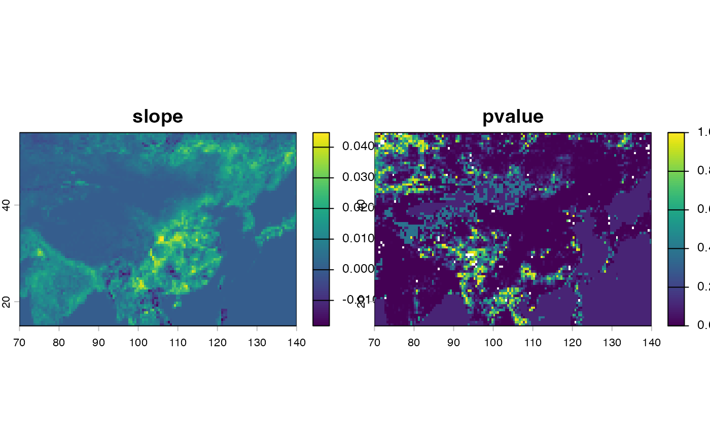

calculate slope of rast object
A yearly rast object, which should have time attribute
c(year_begin, year_end)
The path of outputed tiff file. If specified, slope and
pvalue will be written into outfile.
the function used to calculate slope, see slope() for details.
other parameters ignored
logical. If TRUE, outfile is overwritten.
name of the progress bar to use, see
create_progress_bar
A terra rast object, with bands of slope and pvalue.
library(rtrend)
library(terra)
#> terra 1.6.41
f <- system.file("rast/MOD15A2_LAI_China_G050_2001-2020.tif", package = "rtrend")
r <- rast(f)
r
#> class : SpatRaster
#> dimensions : 80, 140, 20 (nrow, ncol, nlyr)
#> resolution : 0.5, 0.5 (x, y)
#> extent : 70, 140, 15, 55 (xmin, xmax, ymin, ymax)
#> coord. ref. : lon/lat WGS 84 (EPSG:4326)
#> source : MOD15A2_LAI_China_G050_2001-2020.tif
#> names : LAI, LAI, LAI, LAI, LAI, LAI, ...
#> min values : 0.000000, 0.000000, 0.000000, 0.00000, 0.000000, 0.000000, ...
#> max values : 5.692542, 5.479348, 5.585326, 5.33587, 5.822826, 5.533152, ...
#> time (days) : 2001-01-01 to 2020-01-01
time(r)
#> [1] "2001-01-01" "2002-01-01" "2003-01-01" "2004-01-01" "2005-01-01"
#> [6] "2006-01-01" "2007-01-01" "2008-01-01" "2009-01-01" "2010-01-01"
#> [11] "2011-01-01" "2012-01-01" "2013-01-01" "2014-01-01" "2015-01-01"
#> [16] "2016-01-01" "2017-01-01" "2018-01-01" "2019-01-01" "2020-01-01"
slp <- slope_rast(r,
period = c(2001, 2020),
outfile = "LAI_trend.tif", overwrite = TRUE,
fun = rtrend::slope_mk, .progress = "none"
)
# if you want to show progress, set `.progress = "text"`
slp
#> class : SpatRaster
#> dimensions : 80, 140, 2 (nrow, ncol, nlyr)
#> resolution : 0.5, 0.5 (x, y)
#> extent : 70, 140, 15, 55 (xmin, xmax, ymin, ymax)
#> coord. ref. : lon/lat WGS 84 (EPSG:4326)
#> source(s) : memory
#> names : slope, pvalue
#> min values : -0.01830315, 0
#> max values : 0.04475858, 1
plot(slp)

file.remove("LAI_trend.tif")
#> [1] TRUE